Add anything with +
A receipt, a tag, a barcode or a screenshot. Take a photo or choose one, or a whole folder of them.
Snap a receipt, a clothes tag, a barcode or an order screenshot. TidyTuck reads it on your iPhone, fills in the shop, date and price, and keeps every item with its receipts, photos, return date and warranty.
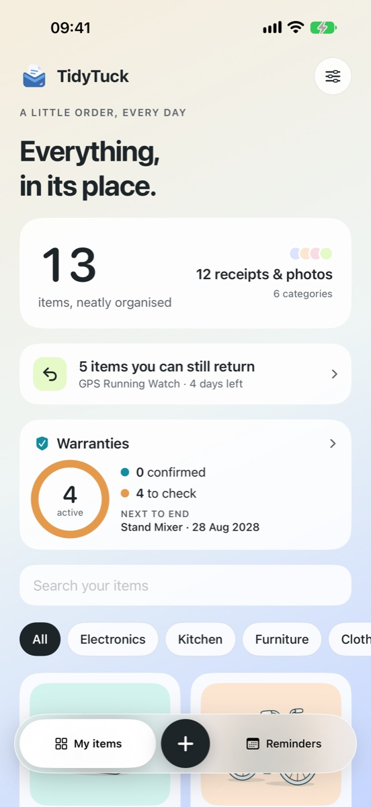
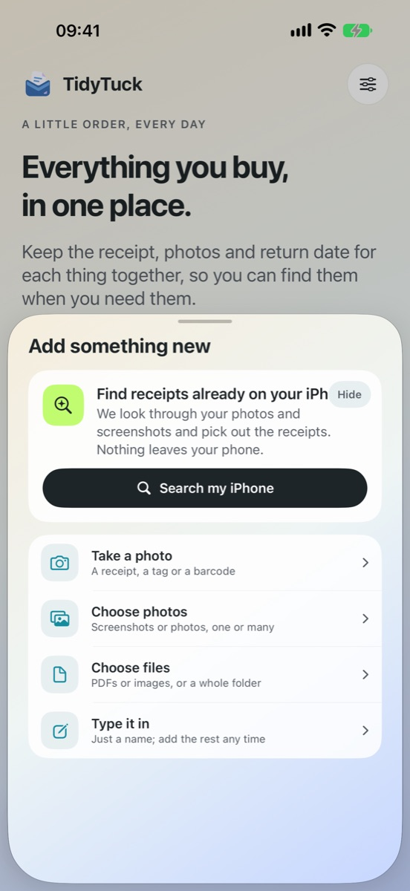
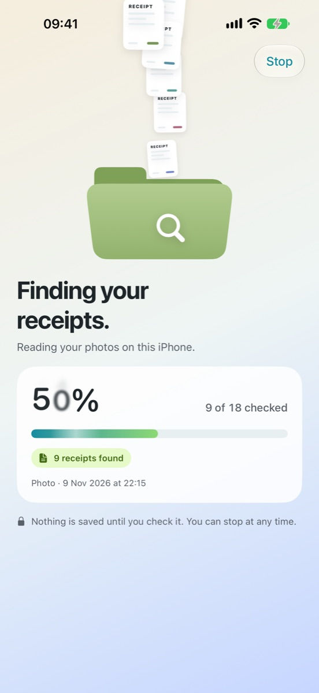
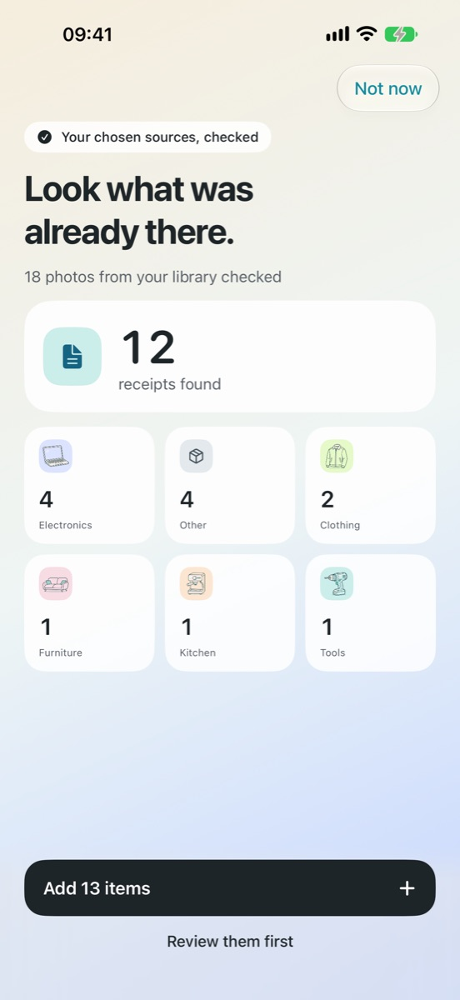
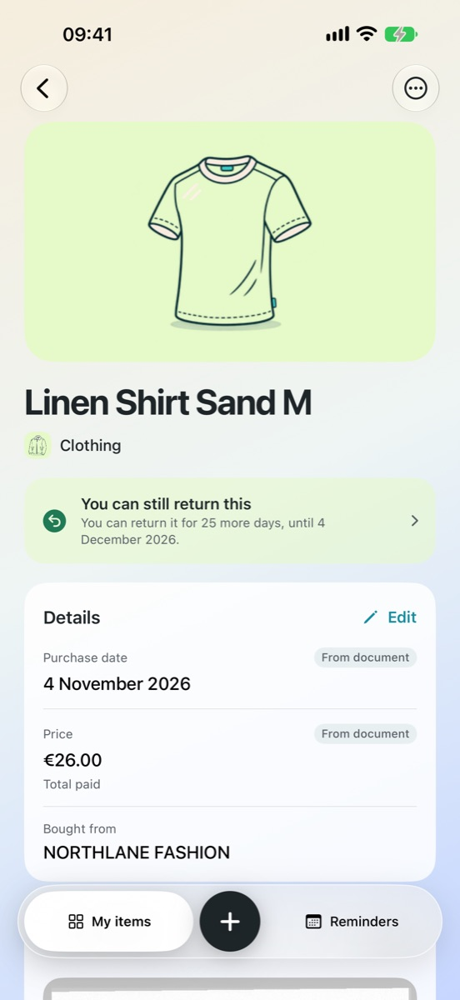
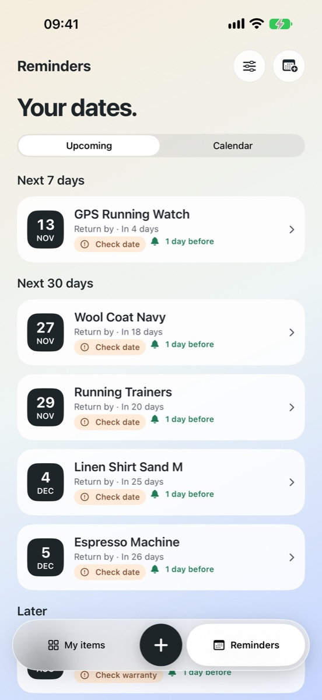
The problem
Everything you buy comes with a receipt, and it always seems to disappear right when you need it.
See it work
How it helps
A receipt, a tag, a barcode or a screenshot. Take a photo or choose one, or a whole folder of them.
Search my iPhone looks through the photos you allow and gathers the receipts it finds.
Shop, purchase date, price and order number, read on your iPhone. You just check them.
Every item shows how many days are left, worked out from the return policy on the receipt.
Return dates, warranties and expiry dates in one calendar, with a reminder before each one.
No account, no cloud, no tracking. Everything is read and kept on your iPhone.
A look inside
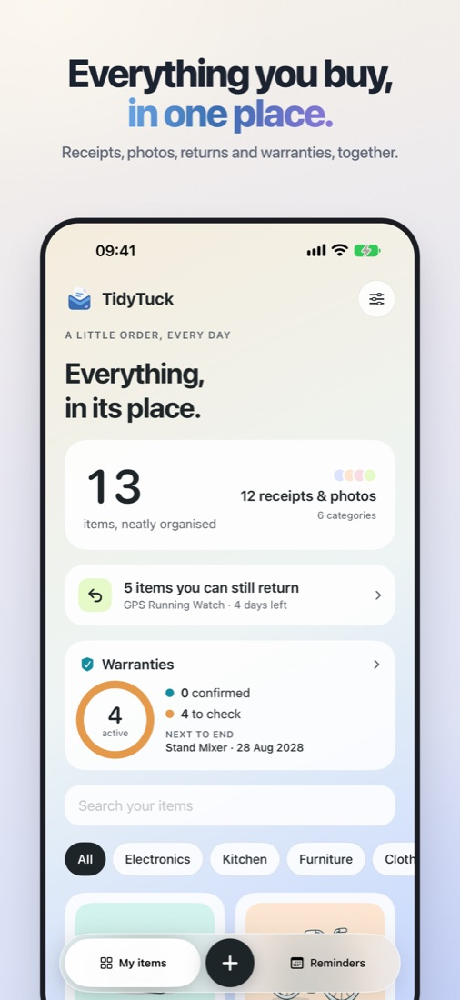
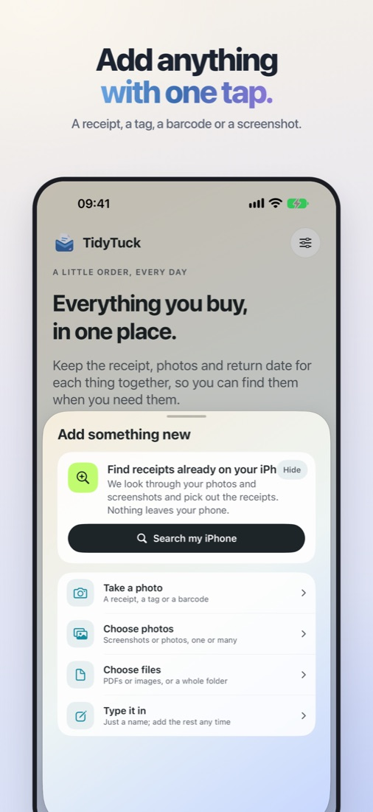
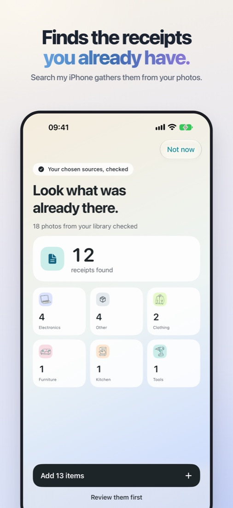
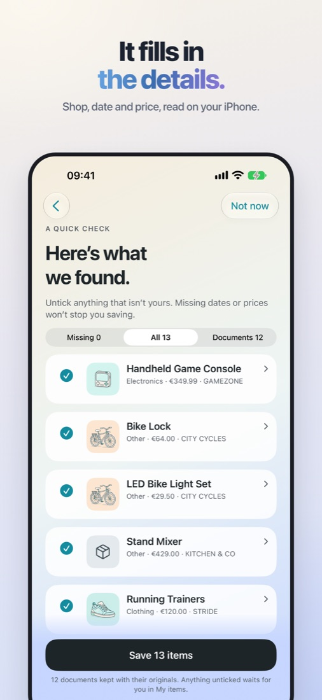
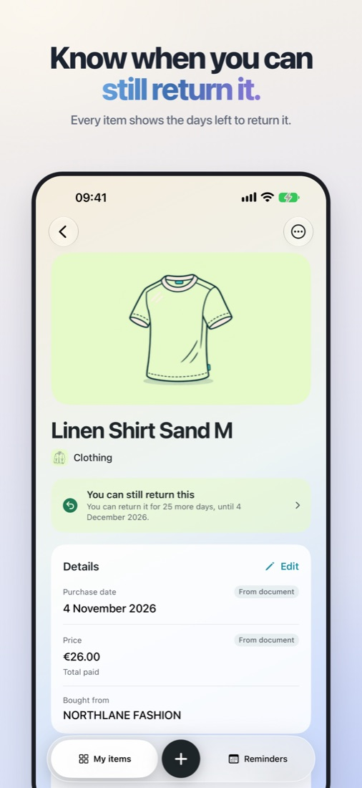
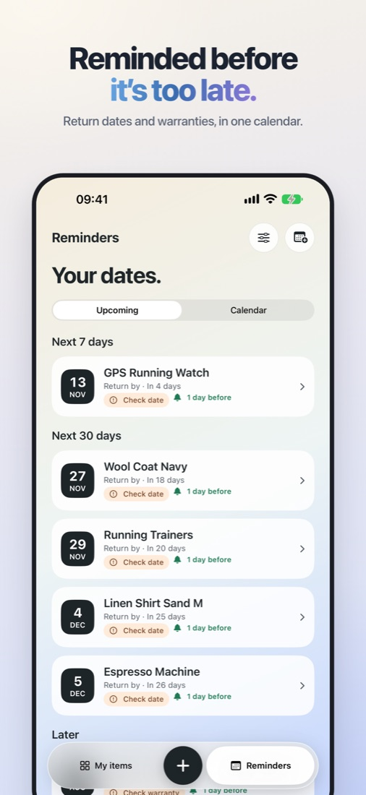
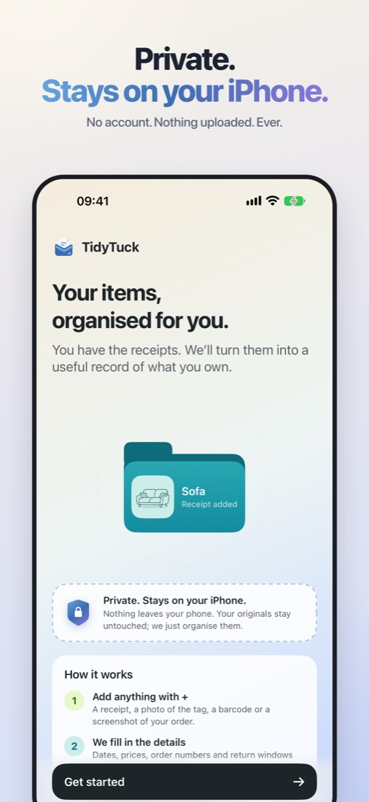
Questions
Yes. TidyTuck is available on the App Store in supported regions. It is a one-time purchase with no subscription. The App Store shows the price and availability for your country.
An iPhone with iOS 18 or later.
No. Receipts and photos are read on your iPhone with Apple’s built-in recognition. There’s no account or cloud service. See the privacy policy.
Your iPhone’s iCloud backup or Quick Start brings TidyTuck across with your other apps. You can also make a backup file in TidyTuck and restore it on the new phone.
Deleting it removes its data from your iPhone, and we can’t recover it because nothing is stored on our side. Make a backup from time to time.
More help on the support page.
Every receipt, right where you need it.